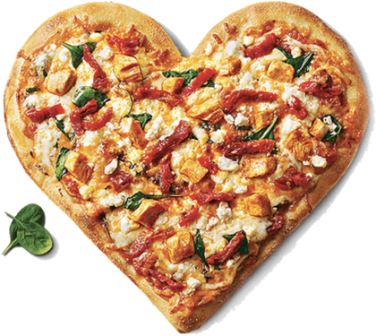
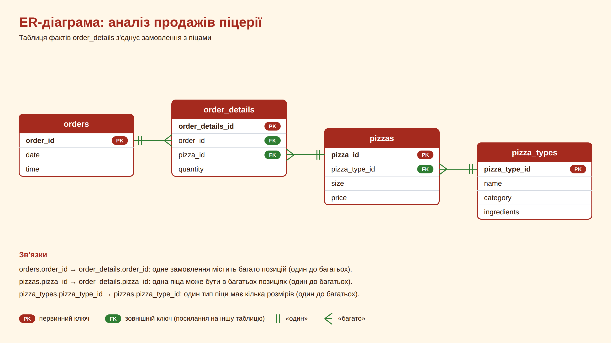

Дашборд Tableau

Автор: Alisa Andrieieva
Курс: Data Analytics & Engineering (DA-02-26)
Дата захисту: 4.10.2026

Нова власниця піцерії в Нью-Джерсі, Лаура Мартінес, разом із закладом отримала вивантаження з каси за весь 2015 рік: замовлення, дата й час, піци та їх кількість. Самій розібратися в цих таблицях їй складно.
Мета аналізу: на даних за 2015 рік підготувати конкретні рекомендації з цифрами та інтерактивний дашборд, з яким власниця зможе працювати самостійно.
У січні потрібно ухвалити три рішення:
Джерело: вивантаження з каси піцерії в Нью-Джерсі за весь 2015 рік. Чотири таблиці, пов'язані ключами (схема нижче).
Обсяг: 21 350 замовлень (orders), 48 620 позицій у замовленнях (order_details), продано 49 574 піци на суму 817 860 $. Середній чек: 38,31 $.
Довідники: pizzas, 96 позицій (піци з розмірами); pizza_types, 32 різні піци в меню.

Перевірено кількість рядків у всіх таблицях (21 350 замовлень, 48 620 позицій, 96 піц, 32 типи) і цілісність з'єднання таблиць.
Години роботи: за даними, піцерія працює переважно з 11:00 до 22:59 (режим роботи в даних не вказано, це висновок із розподілу замовлень). Лише 37 замовлень (0,17%) зафіксовано о 09:00, 10:00 і 23:00, тому ці години не розглядалися як вікна для акції.
Результат: після об'єднання чотирьох таблиць у sales_lines лишилося 48 620 рядків, стільки ж, скільки в order_details, тож рядки не втрачені й не задубльовані.
За рік зроблено 21 350 замовлень і продано 49 574 піци; середній чек 38,31 $, у середньому 2,32 піци на замовлення.
SELECT ROUND(SUM(od.quantity * p.price), 2) AS total_revenue, COUNT(DISTINCT o.order_id) AS total_orders, SUM(od.quantity) AS total_pizzas_sold, ROUND(SUM(od.quantity * p.price) / COUNT(DISTINCT o.order_id), 2) AS avg_check, ROUND(CAST(SUM(od.quantity) AS REAL) / COUNT(DISTINCT o.order_id), 2) AS avg_pizzas_per_order FROM orders o JOIN order_details od ON o.order_id = od.order_id JOIN pizzas p ON od.pizza_id = p.pizza_id;
Найсильніший місяць липень (72 557,90 $, 1 935 замовлень), найслабший жовтень (64 027,60 $, 1 646); різниця між ними 13,3%. Найбільший приріст до попереднього місяця у листопаді (+9,95%), найбільший спад у грудні (−8,09%).
WITH monthly_sales AS (
SELECT
strftime('%m', o.date) AS month,
ROUND(SUM(od.quantity * p.price), 2) AS revenue,
COUNT(DISTINCT o.order_id) AS total_orders
FROM orders o
JOIN order_details od ON o.order_id = od.order_id
JOIN pizzas p ON od.pizza_id = p.pizza_id
GROUP BY month
)
SELECT
month,
revenue,
total_orders,
ROUND(
(revenue - LAG(revenue, 1) OVER (ORDER BY month))
/ LAG(revenue, 1) OVER (ORDER BY month) * 100, 2
) AS revenue_growth_pct
FROM monthly_sales;
Головний пік припадає на обід: о 12:00 і 13:00 по 2 520 і 2 455 замовлень за рік (максимум у четвер о 13:00, 438 замовлень); другий пік о 17:00–18:00, з піком у п'ятницю й суботу о 18:00. Між піками о 14:00–15:00 тихіше, приблизно 1 470 замовлень на годину. За днями тижня найзавантаженіша п'ятниця (у середньому 70,76 замовлення на день), найтихіша неділя (50,46).
SELECT
strftime('%w', o.date) AS weekday_num,
CASE strftime('%w', o.date)
WHEN '0' THEN 'Неділя'
WHEN '1' THEN 'Понеділок'
WHEN '2' THEN 'Вівторок'
WHEN '3' THEN 'Середа'
WHEN '4' THEN 'Четвер'
WHEN '5' THEN 'П"ятниця'
WHEN '6' THEN 'Субота'
END AS weekday_name,
COUNT(DISTINCT o.order_id) AS total_orders,
COUNT(DISTINCT o.date) AS total_days_count,
ROUND(CAST(COUNT(DISTINCT o.order_id) AS REAL) / COUNT(DISTINCT o.date), 2) AS avg_orders_per_day
FROM orders o
GROUP BY weekday_num, weekday_name
ORDER BY weekday_num;
SELECT
strftime('%w', o.date) AS weekday_num,
CASE strftime('%w', o.date)
WHEN '0' THEN 'Неділя'
WHEN '1' THEN 'Понеділок'
WHEN '2' THEN 'Вівторок'
WHEN '3' THEN 'Середа'
WHEN '4' THEN 'Четвер'
WHEN '5' THEN 'П"ятниця'
WHEN '6' THEN 'Субота'
END AS weekday_name,
strftime('%H', o.time) AS order_hour,
COUNT(DISTINCT o.order_id) AS total_orders
FROM orders o
GROUP BY weekday_num, order_hour
ORDER BY total_orders DESC;
Списки збігаються частково: у топ-5 за виручкою й за кількістю спільні Thai Chicken, Barbecue Chicken і Classic Deluxe; серед аутсайдерів за обома показниками The Brie Carre (490 шт., 11 588,50 $).
SELECT pt.name AS pizza_name, ROUND(SUM(od.quantity * p.price), 2) AS total_revenue FROM order_details od JOIN pizzas p ON od.pizza_id = p.pizza_id JOIN pizza_types pt ON p.pizza_type_id = pt.pizza_type_id GROUP BY pt.name ORDER BY total_revenue DESC LIMIT 5; SELECT pt.name AS pizza_name, SUM(od.quantity) AS total_pizzas_sold FROM order_details od JOIN pizzas p ON od.pizza_id = p.pizza_id JOIN pizza_types pt ON p.pizza_type_id = pt.pizza_type_id GROUP BY pt.name ORDER BY total_pizzas_sold DESC LIMIT 5; SELECT pt.name AS pizza_name, ROUND(SUM(od.quantity * p.price), 2) AS total_revenue FROM order_details od JOIN pizzas p ON od.pizza_id = p.pizza_id JOIN pizza_types pt ON p.pizza_type_id = pt.pizza_type_id GROUP BY pt.name ORDER BY total_revenue ASC LIMIT 5; SELECT pt.name AS pizza_name, SUM(od.quantity) AS total_pizzas_sold FROM order_details od JOIN pizzas p ON od.pizza_id = p.pizza_id JOIN pizza_types pt ON p.pizza_type_id = pt.pizza_type_id GROUP BY pt.name ORDER BY total_pizzas_sold ASC LIMIT 5;
Розмір L дає 45,9% виручки, M 30,5%, S 21,8%, а XL і XXL разом лише 1,8%; серед категорій лідирує Classic (26,9%), але всі чотири категорії близькі: від 23,7% до 26,9%.
WITH category_sales AS (
SELECT
pt.category,
ROUND(SUM(od.quantity * p.price), 2) AS revenue
FROM order_details od
JOIN pizzas p ON od.pizza_id = p.pizza_id
JOIN pizza_types pt ON p.pizza_type_id = pt.pizza_type_id
GROUP BY pt.category
),
total_sales AS (
SELECT SUM(revenue) AS total_rev
FROM category_sales
)
SELECT
cs.category,
cs.revenue,
ROUND((cs.revenue * 100.0 / ts.total_rev), 2) AS revenue_share_pct
FROM category_sales cs
CROSS JOIN total_sales AS ts
ORDER BY revenue_share_pct DESC;
WITH size_sales AS (
SELECT
p.size,
ROUND(SUM(od.quantity * p.price), 2) AS revenue
FROM order_details od
JOIN pizzas p ON od.pizza_id = p.pizza_id
GROUP BY p.size
),
total_sales AS (
SELECT SUM(revenue) AS total_rev
FROM size_sales
)
SELECT
ss.size,
ss.revenue,
ROUND((ss.revenue * 100.0 / ts.total_rev), 2) AS revenue_share_pct
FROM size_sales ss
CROSS JOIN total_sales AS ts
ORDER BY revenue_share_pct DESC;
The Brie Carre, The Spinach Supreme і The Mediterranean входять у п'ятірку найслабших і за виручкою, і за кількістю: разом 42 226,75 $ (5,2% виручки) і 2 374 піци (4,8% продажів).
WITH pizza_revenue AS (
SELECT
pt.name AS pizza_name,
ROUND(SUM(od.quantity * p.price), 2) AS revenue
FROM order_details od
JOIN pizzas p ON od.pizza_id = p.pizza_id
JOIN pizza_types pt ON p.pizza_type_id = pt.pizza_type_id
GROUP BY pt.name
),
total AS (
SELECT SUM(revenue) AS total_rev
FROM pizza_revenue
)
SELECT
pr.pizza_name,
pr.revenue,
ROUND((pr.revenue * 100.0 / t.total_rev), 2) AS share_pct
FROM pizza_revenue pr
CROSS JOIN total AS t
ORDER BY pr.revenue ASC
LIMIT 5;
Замовлення з 4+ піцами становлять лише 18,2% замовлень (3 880), але дають 39,4% виручки (322 570,90 $); їхній середній чек 83,14 $ проти 28,35 $ у звичайних, тож окрема пропозиція для груп виправдана.
WITH order_summary AS (
SELECT
od.order_id,
SUM(od.quantity) AS total_qty,
SUM(od.quantity * p.price) AS total_revenue
FROM order_details AS od
JOIN pizzas AS p ON od.pizza_id = p.pizza_id
GROUP BY od.order_id
),
categorized_orders AS (
SELECT
order_id,
total_revenue,
CASE
WHEN total_qty >= 4 THEN 'Large (4+)'
ELSE 'Normal (<4)'
END AS order_category
FROM order_summary
)
SELECT
order_category,
COUNT(order_id) AS order_count,
ROUND(SUM(total_revenue), 2) AS category_revenue,
ROUND(COUNT(order_id) * 100.0 / (SELECT COUNT(*) FROM categorized_orders), 2) AS orders_share_pct,
ROUND(SUM(total_revenue) * 100.0 / (SELECT SUM(total_revenue) FROM categorized_orders), 2) AS revenue_share_pct
FROM categorized_orders
GROUP BY order_category;
Найслабші робочі вікна: неділя–четвер о 22:00, разом 336 замовлень і 10 962 $ за рік; зростання на 10% дасть +1 096 $ за рік (≈6 $ за один вечір).
WITH windows AS (
SELECT
strftime('%w', o.date) AS weekday_num,
CASE strftime('%w', o.date)
WHEN '0' THEN 'Неділя'
WHEN '1' THEN 'Понеділок'
WHEN '2' THEN 'Вівторок'
WHEN '3' THEN 'Середа'
WHEN '4' THEN 'Четвер'
WHEN '5' THEN 'П"ятниця'
WHEN '6' THEN 'Субота'
END AS day_name,
strftime('%H', o.time) AS hour_of_day,
COUNT(DISTINCT o.order_id) AS orders_count,
COUNT(DISTINCT o.date) AS days_count,
ROUND(SUM(od.quantity * p.price), 2) AS window_revenue
FROM orders o
JOIN order_details od ON o.order_id = od.order_id
JOIN pizzas p ON od.pizza_id = p.pizza_id
GROUP BY weekday_num, day_name, hour_of_day
)
SELECT
day_name,
hour_of_day,
orders_count,
days_count,
window_revenue,
ROUND(window_revenue * 0.10, 2) AS plus_10_pct_per_year,
ROUND(window_revenue * 0.10 / days_count, 2) AS plus_10_pct_per_day
FROM windows
WHERE orders_count >= 50
ORDER BY window_revenue ASC
LIMIT 10;
Замовлення з 4+ піцами становлять 18% замовлень, але дають 39% виручки.
Пік попиту о 12:00–13:00 у будні; п'ятниця найзавантаженіша (70,8 замовлення на день проти 50,5 у неділю).
Три найслабші піци дають лише 5,2% виручки, а розміри XL і XXL разом 1,8%.
Чому: о 12:00–13:00 по 2 455–2 520 замовлень на годину, а о 14:00–15:00 близько 1 470 (приблизно на 40% менше); після 21:00 теж спад; п'ятниця найзавантаженіша (70,76 замовлення на день), неділя найтихіша (50,46)
Ефект: більше людей у піки (12:00–13:00 і 17:00–18:00), менше простою о 14:00–15:00 і після 21:00
Чому: The Brie Carre, The Spinach Supreme і The Mediterranean найслабші і за виручкою, і за кількістю; разом 5,2% виручки
Ефект: коротше меню й менше інгредієнтів, що псуються; ризик втратити до 42 227 $ на рік, частину клієнти замінять іншими піцами
Чому: це найслабші робочі вікна, 336 замовлень і 10 962 $ за рік
Ефект: +10% дасть +1 096 $ за рік (≈6 $ за один вечір)
| Сценарій | Попит, що збережеться після вилучення 3 піц | Акція о 22:00 | Групова пропозиція | Прогноз виручки | До 817 860 $ |
|---|---|---|---|---|---|
| Песимістичний | 0% | 0% | 0% | 775 633 $ | −5,16% |
| Базовий | 50% | +10% | +5% | 813 971 $ | −0,48% |
| Оптимістичний | 80% | +10% | +10% | 842 768 $ | +3,05% |
Вилучення трьох піц майже не змінює виручку, якщо клієнти частково переходять на інші; групова пропозиція здатна компенсувати втрату, а акція о 22:00 дає лише близько 1 096 $ за рік.
Припущення: частка збереженого попиту та ріст від акцій не виводяться з даних, а задані для сценаріїв. Собівартості в даних немає, тому маржу не оцінено; головна вигода від вилучення піц це простіше меню й менше інгредієнтів, що псуються.
Обмеження: дані лише за один рік (2015), тому сезонність видно слабо; немає собівартості й прибутку, тож усі оцінки спираються на виручку; немає даних про клієнтів, тому «групові» замовлення визначено лише за 4+ піцами.
Наступні кроки: протестувати акцію в неділю–четвер о 22:00 протягом кількох тижнів і порівняти з поточними продажами; порахувати прибутковість піц із собівартістю перед вилученням із меню; перевірити графік змін на реальній завантаженості.
Контакти: berlin22de@gmail.com
GitHub: github.com/Alisa-debug777/pizza-sales-analysis
Презентація онлайн: alisa-debug777.github.io/pizza-sales-analysis/Presentation
Tableau Public: public.tableau.com/…/pizza_dashboard